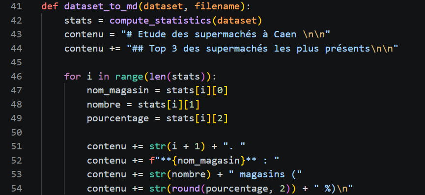
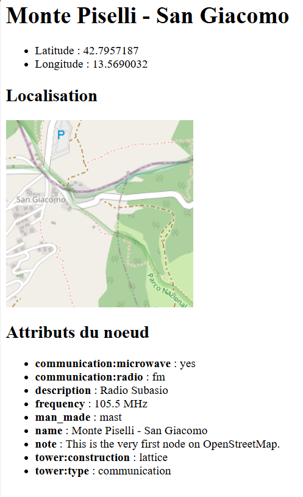

Projet 1.05 – Traiter des données
Contexte & Cahier des charges
Dans l'écosystème numérique actuel, la capacité à extraire, structurer et interpréter des flux de données brutes est une compétence transversale capitale pour un administrateur systèmes et réseaux (analyse de logs, cartographie, automatisation de reportings).
Réalisé en binôme, ce projet imposait le développement modulaire d'une application en Python. Le cahier des charges exigeait d'interroger dynamiquement les API d'OpenStreetMap (OSM) et Overpass, d'extraire des bases de données géographiques au format JSON (ciblant les supermarchés de l'agglomération de Caen), de générer des statistiques d'occurrence, puis d'automatiser la création de fiches de synthèse web (HTML) incluant des tuiles cartographiques.
Démarche de production : De l'acquisition à la restitution HTML
L'architecture de notre solution s'est appuyée sur la segmentation du code source en plusieurs modules spécialisés (requêtage, traitement d'image, statistiques, conversion).
Étape 1 : Requêtage réseau et extraction OverpassQL
Apprentissage mobilisé (AC13.01) : Utiliser les bibliothèques logicielles. À l'aide de la bibliothèque requests, j'ai configuré l'envoi de requêtes HTTP ciblant les points de terminaison des API OSM et Overpass. La requête rédigée en langage OverpassQL filtrait spécifiquement les nœuds (nodes) portant des tags précis pour en extraire la donnée brute.
Étape 2 : Parsing JSON et Analyse Statistique
Apprentissage mobilisé (AC13.02) : Lire et modifier des structures de données. J'ai conçu des fonctions pour itérer sur les dictionnaires JSON retournés par le serveur, afin d'y récupérer les coordonnées GPS et de générer un classement statistique d'occurrences.
🚨 Incident n°1 : Interruption du script due aux métadonnées hétérogènes
Le problème : Lors de la phase de test, notre script s'est brutalement interrompu avec une exception système KeyError. La base OpenStreetMap étant collaborative, sa structure est incomplète : certains points recensés ne possédaient pas les clés de dictionnaire attendues (comme la ville ou l'adresse). L'appel direct d'index sur une clé inexistante provoquait le crash de l'application.
⚙️ Remédiation par programmation défensive :
Pour garantir la résilience de l'application, nous avons remplacé l'indexation directe par la méthode sémantique .get() native de Python. Cette approche permet de tenter l'extraction de la donnée, et en cas d'absence, d'injecter automatiquement une valeur de substitution sécurisée (ex: "Ville non renseignée") sans déclencher d'erreur fatale.
📸 Preuve technique : Script de Parsing sécurisé

L'analyse de ce bloc issu de notre fichier stats.py objective la remédiation. L'intégration de la méthode .get() pour les attributs d'adresse prouve l'adaptation du code source aux contraintes d'une API externe imparfaite.
Étape 3 : Cartographie, traitement matriciel (Pillow) et Sécurité Réseau
L'un des défis majeurs a été de traduire les coordonnées GPS en un système de tuiles cartographiques exploitables. Dans le module fiche_osm.py, nous avons programmé une fonction mathématique de conversion permettant d'indexer précisément la carte visée. L'image PNG résultante est alors téléchargée et traitée en mémoire tampon (BytesIO) grâce à la bibliothèque Pillow (PIL).
🚨 Incident n°2 : Blocage par le pare-feu du serveur (Erreur 403 Forbidden)
Le problème : Lors de la génération des cartes, le serveur d'images d'OpenStreetMap rejetait systématiquement nos requêtes en renvoyant une erreur HTTP 403 Access Blocked. En effet, l'API possède des sécurités anti-bots et détectait que la requête provenait du module requests de Python plutôt que d'un véritable utilisateur.
⚙️ Contournement réseau via l'en-tête HTTP :
Pour résoudre ce blocage, j'ai analysé la structure de la trame HTTP. J'ai injecté un dictionnaire headers dans notre requête Python contenant un User-Agent usurpé (Mozilla/5.0 Windows NT 10.0). Cette manipulation a permis de faire passer notre script pour un navigateur web humain classique, contournant ainsi le pare-feu et rétablissant le téléchargement des cartes.
Étape 4 : Industrialisation et Compilation HTML
La finalisation du pipeline repose sur l'assemblage dynamique des données textuelles, statistiques et cartographiques au sein d'un fichier Markdown. Ce dernier est passé en paramètre de notre script de conversion qui génère instantanément la fiche web finale.
📸 Preuve technique : Rendu HTML final

Cette capture du livrable final démontre la réussite de l'automatisation de bout en bout : les informations de l'API (nœuds, tags) et le traitement d'image de la tuile cartographique (suite au contournement du User-Agent) sont correctement instanciés dans le balisage web.
Bilan du Projet & Prise de recul
Ce développement collaboratif m'a conforté dans l'exigence imposée par le langage Python, particulièrement lors de l'interaction avec des services distants dont nous ne maîtrisons pas la sécurité réseau (erreurs 403) ni la qualité des données de sortie (KeyError).
Compétences consolidées
Maîtrise complète des mécanismes de requêtes HTTP, de l'usurpation d'en-têtes (User-Agent), du parcours algorithmique de dictionnaires JSON, et de la manipulation d'images matricielles.
Évolution des pratiques
Pour optimiser cette application, j'y intégrerais à l'avenir un mécanisme de persistance locale (base de données SQLite) afin de conserver en cache les réponses de l'API et éviter de solliciter inutilement les serveurs externes.
Validation des apprentissages finaux